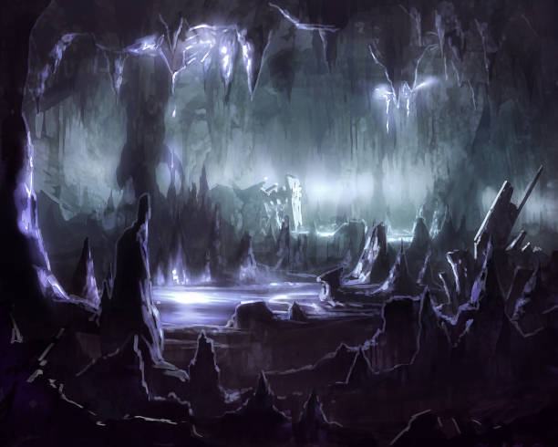

Du folgst dem Echo der Wassertropfen und gelangst in eine gewaltige unterirdische Halle. Die Decke ist so hoch, dass sie im Schatten verschwindet. Überall tropft Wasser von den Stalaktiten herab und bildet kleine Pfützen auf dem steinernen Boden.
In der Mitte der Halle steht ein alter, verrosteter Mechanismus - ein riesiges Zahnrad, das langsam und knarrend rotiert. Das Wasser sammelt sich in einem kreisförmigen Graben um den Mechanismus herum. Die Luft ist feucht und riecht nach altem Metall und Moos. Du entdeckst zwei Wege aus der Halle: Eine schmale Steinbrücke führt über den Wassergraben zu einer Tür auf der anderen Seite, während ein steiler Pfad an der Wand entlang nach oben führt.